A mudroom has one job: stop coats, boots and backpacks before they reach the rest of the house.
Most fail for boring reasons. The hooks are too close together, the bench is the wrong height, or there is nowhere for a wet boot to drip.
These 58 rooms, from a four-foot nook to a full locker wall, are sorted by what they fix.
Start with the rules, then take whatever fits your wall and your toolkit.
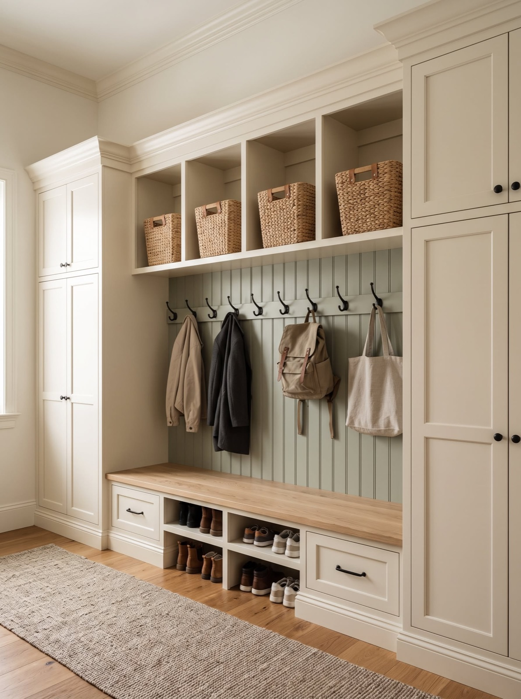
Five Rules for a Mudroom That Survives Real Life
- Hooks go into studs or heavy anchors, six inches apart. A winter coat with a full pocket weighs more than a drywall anchor can hold.
- Bench height is 18 inches. Hook height is 60 to 65 for adults, 40 for kids. Measure before you buy anything.
- One open spot per person, and one spare. Guests arrive. So do deliveries.
- Everything on the floor sits in a tray. A rubber boot tray costs less than refinishing a floor.
- Paint goes on in satin or semi-gloss. Flat paint holds every scuff and will not wipe.
Start with the wall: hooks, pegs and rails
1. A Peg Rail Does What a Closet Cannot
A closet hides coats. A peg rail hangs them where you drop them, which is the only place they ever end up.
This one runs along cream board-and-batten, painted to match, with one camel coat and a wreath on it and a plaid runner underneath.
Mount it at 60 inches with a screw into every stud it crosses. Shaker pegs are glued into a 3/4-inch board, so the board carries the weight, not the peg.
Eight pegs. Four for the family, four for whoever walks in.
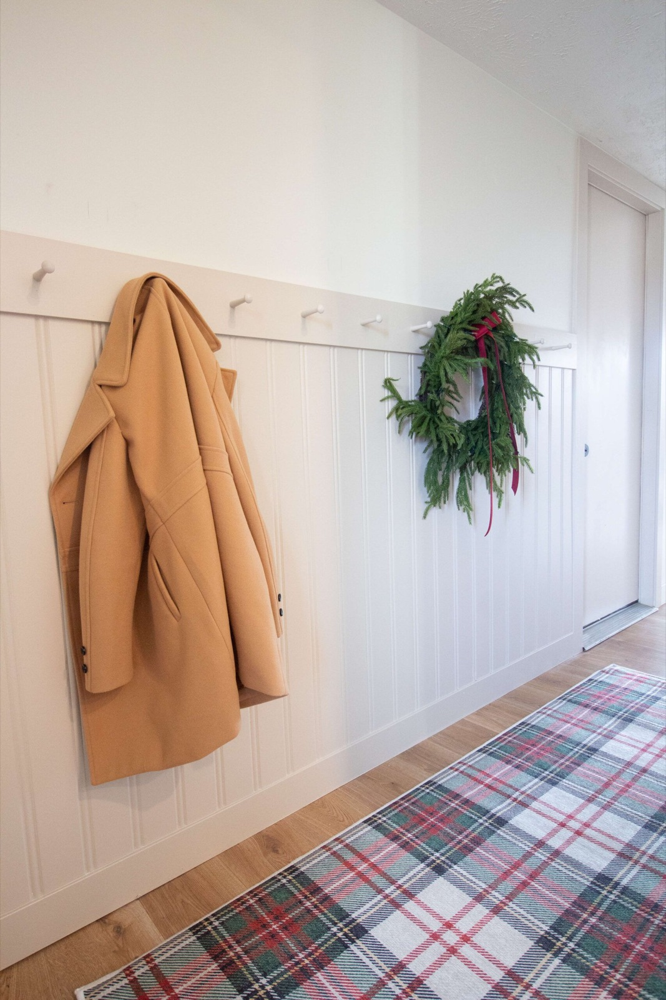
2. Six Inches Between Hooks Is the Number That Matters
Closer than six inches and two coats fight. Wider and you are wasting wall.
Five double hooks sit on a cream rail here, spaced so a jacket, a scarf and two backpacks all hang flat, with a wood bench and two baskets of gloves below.
Measure the rail, divide by six, and round down. The leftover goes at the ends, not in the gaps.
A shelf a foot above the hooks catches the hats.
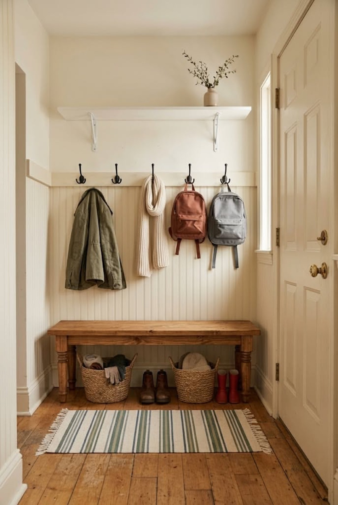
3. Small Hooks Look Quiet and Still Hold a Coat
You do not need a big hook to hold a big coat. These black ones are barely two inches, set into blue beadboard over a long Windsor bench, and a jacket and a hat hang from them without a sag.
The hook is just the handle. A 2-inch wood screw through the beadboard into the stud is what holds the coat.
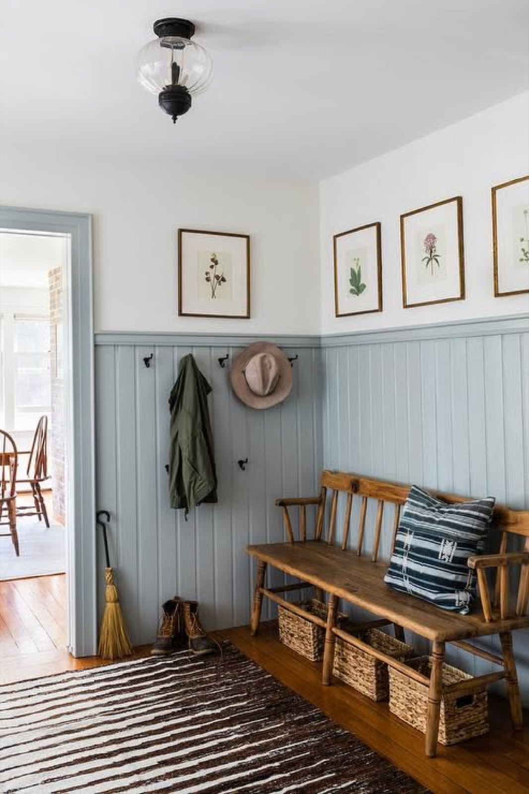
4. Count the Metals Before You Buy Hooks
Brass hooks, black handles and a nickel light look like three trips to the hardware store.
Here everything you touch is brass: the hooks on the rail and nothing else. The bench legs stay raw wood and the basket under it is plain wire.
Pick one metal for anything hands land on. The light fitting can match or disappear.
Nothing else gets a vote.
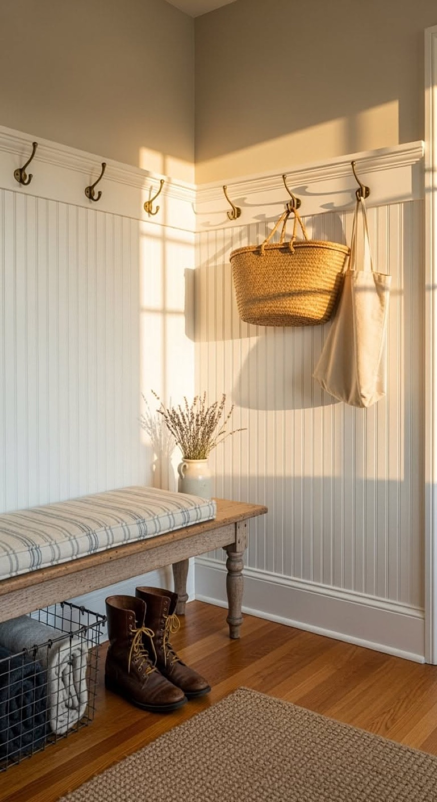
5. One Long Rail Beats Four Short Ones
Short rails leave gaps that collect nothing. One rail across the whole wall turns every inch into storage.
This one spans a cubby bench with nine hooks at even spacing, on beige beadboard with a wood bench top and six baskets below.
Buy the rail as one board, not sections. Butt joints show every time the house moves.
Nine hooks for a family of four leaves five for guests, bags and the dog lead.
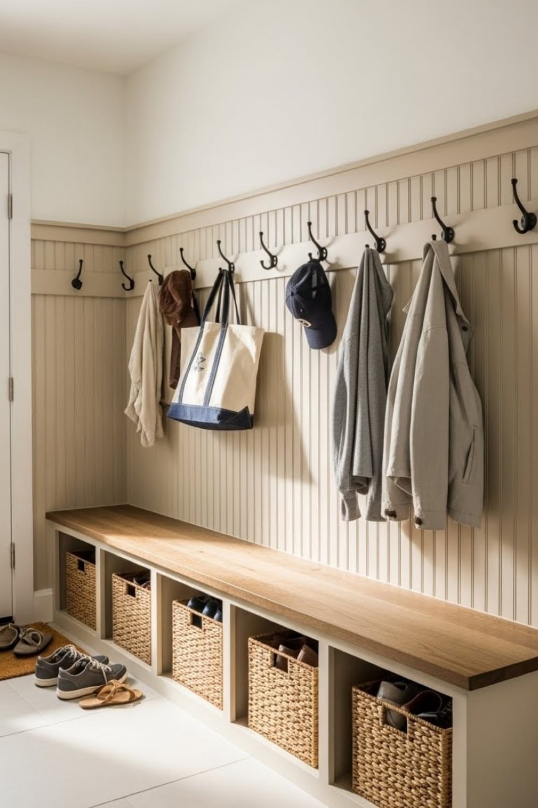
6. Paint the Door the Same Colour as the Wall
A door painted the same colour as the paneling disappears, and the room reads a foot wider. Here the green runs across the beadboard, the bench, the cubby and the Dutch door, so the only contrast is the hat and the bags.
Use exterior-grade paint on the door, even inside. It takes a hit from every bag that comes through.
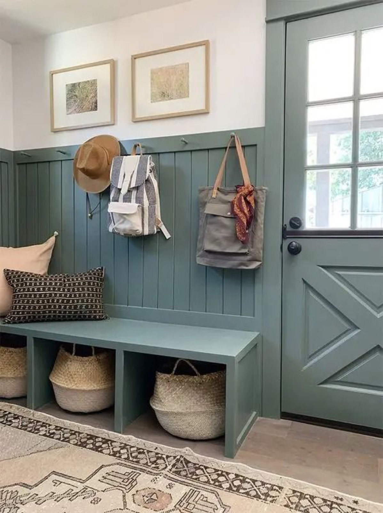
36-Inch Shaker Peg Rack
Shop on Amazon7. A Short Wall Bench Saves Two Feet of Floor
A freestanding bench needs floor on three sides. A wall bench needs floor on one.
This one is 30 inches wide and mounted to the wall with a single leg at the front, with four hooks above and room for a galvanised bin and two pairs of shoes below.
Hang it on a 2x4 ledger screwed into the studs. A floating bench with no ledger is a bench that comes down with the first teenager.
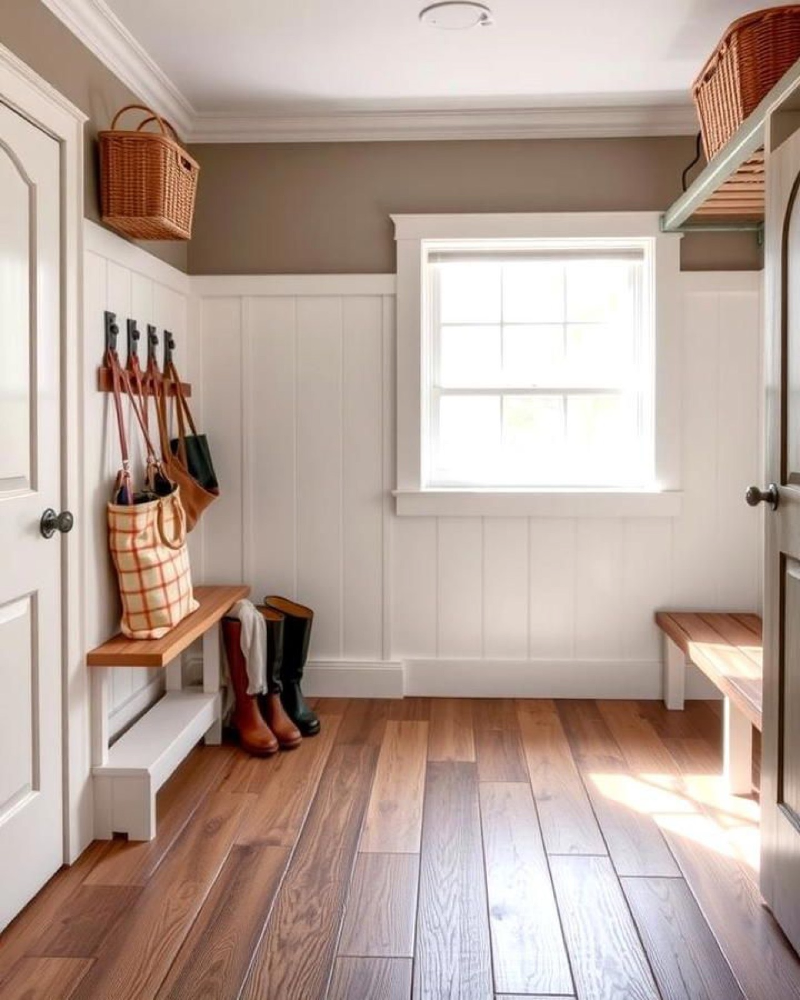
Black Double Coat Hooks, 6-Pack
Shop on Amazon8. A Mirror Pays for Itself Before the First Guest
The last thing anyone does at the door is check their face. Put the mirror there.
A wide oak-framed mirror sits on the hook rail here, with a hat, two jackets and a bag below it and a cushioned bench with shoe cubbies at the bottom.
Mount the mirror on the rail shelf, not the wall, so it comes down for painting. Keep hooks at least four inches below the frame so a coat does not knock it.
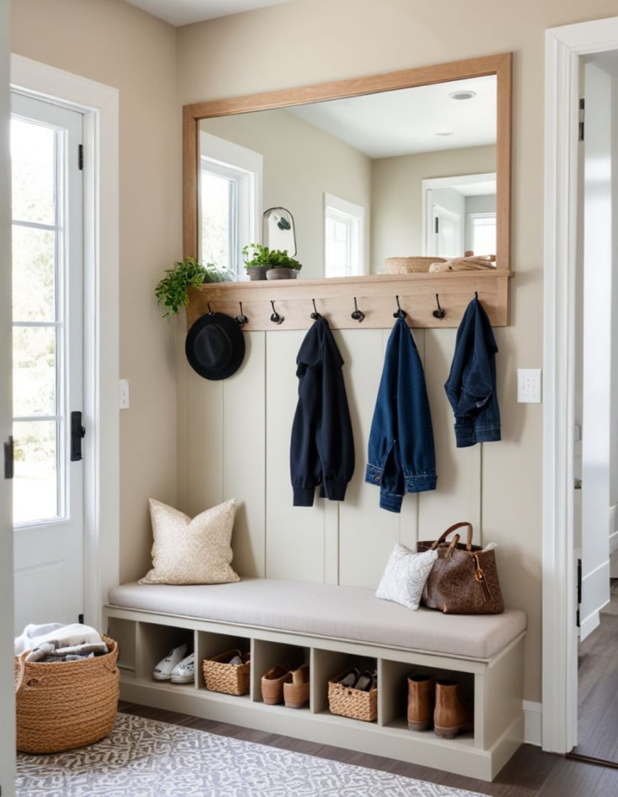
Black Double Coat Hooks, 6-Pack
Shop on AmazonBenches with storage underneath
9. One Cubby per Pair, or the Pile Comes Back
A shelf under a bench collects a pile. Cubbies collect pairs.
Twelve open cubbies run under this oak bench, one pair each, with a hook rail and a basket shelf above and a jute mat in front.
Ten inches wide and seven tall fits a sneaker. Make the two end cubbies taller for boots, or send the boots to a tray on the floor.
Count the pairs in the house before you cut. Then add four.
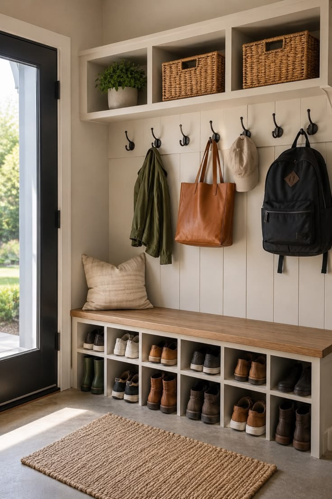
10. Stained Wood Warms a Room That Gets No Sun
A north-facing mudroom in white reads cold by four in the afternoon. This one fixes it with a dark-stained pine bench, a high back, four plaid and jute cushions and a matching shelf with two hat hooks.
Two coats of satin polyurethane on stained wood, with a light sand between. Boots will be on it.
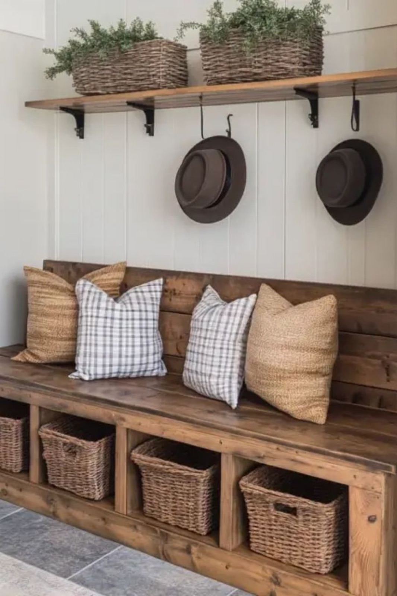
11. Vertical Boards Lift a Low Ceiling
Horizontal shiplap makes a wall wider. Vertical boards make it taller. In a mudroom under eight feet, taller is the one you want.
The vertical paneling here runs floor to ceiling behind a simple oak bench with four baskets, three linen cushions and a French market basket on a hook.
Use 1x6 boards with a 1/8-inch gap. Paint the gaps first, then the faces, or the gaps show bare wood forever.
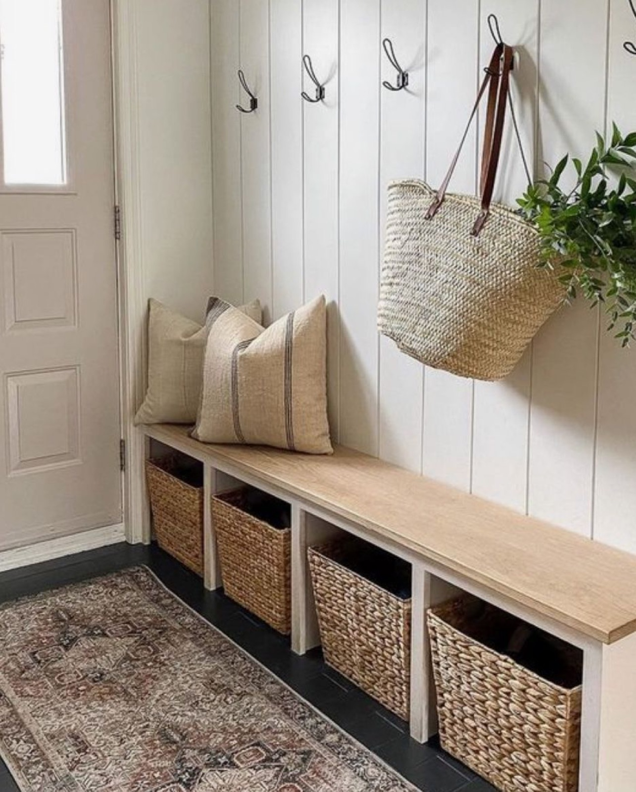
12. Even a Four-Foot Nook Can Work
The smallest room on the list does everything the big ones do: a four-hook rail, a 40-inch wood bench, and a gap below for a bin and two pairs of shoes, wedged between a door and a window.
Mount the bench top on cleats on three walls and skip the legs. The whole floor goes to shoes.
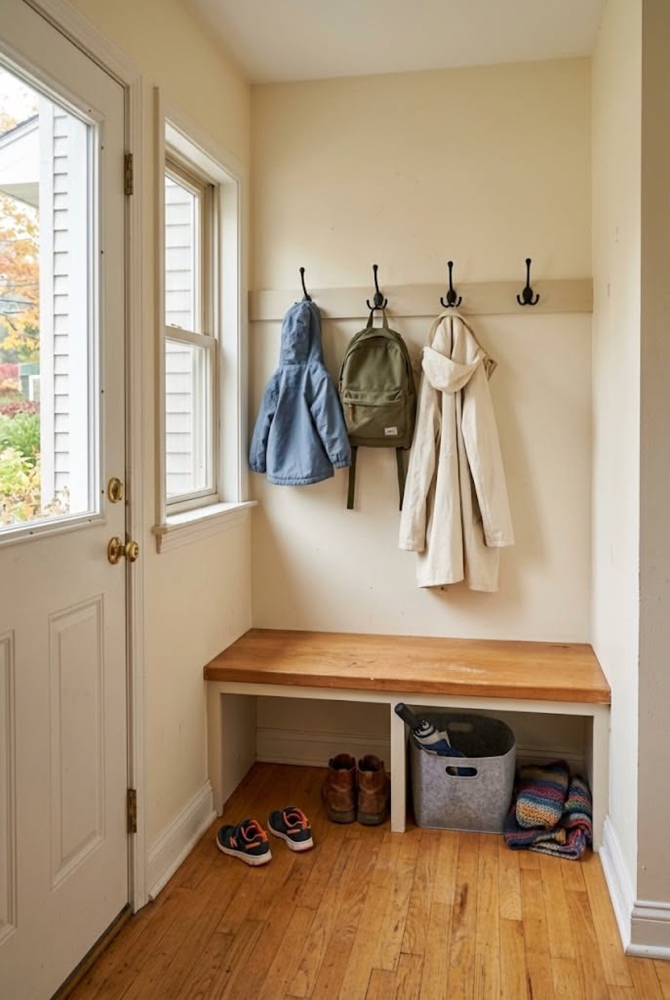
Wall Hook Rail with 6 Double Hooks
Shop on AmazonWater Hyacinth Cube Baskets, Set of 3
Shop on Amazon13. A Floating Bench Keeps the Floor Mop-Ready
Bench legs are where mud collects. Take them away.
A thick walnut slab floats on white board-and-batten here, with nothing below it but floor and one cushion on top.
Hang it on a steel bracket rated for 300 pounds a pair, into studs, with the bracket hidden by the bench apron.
That rating is two adults and a child. Do not guess it.
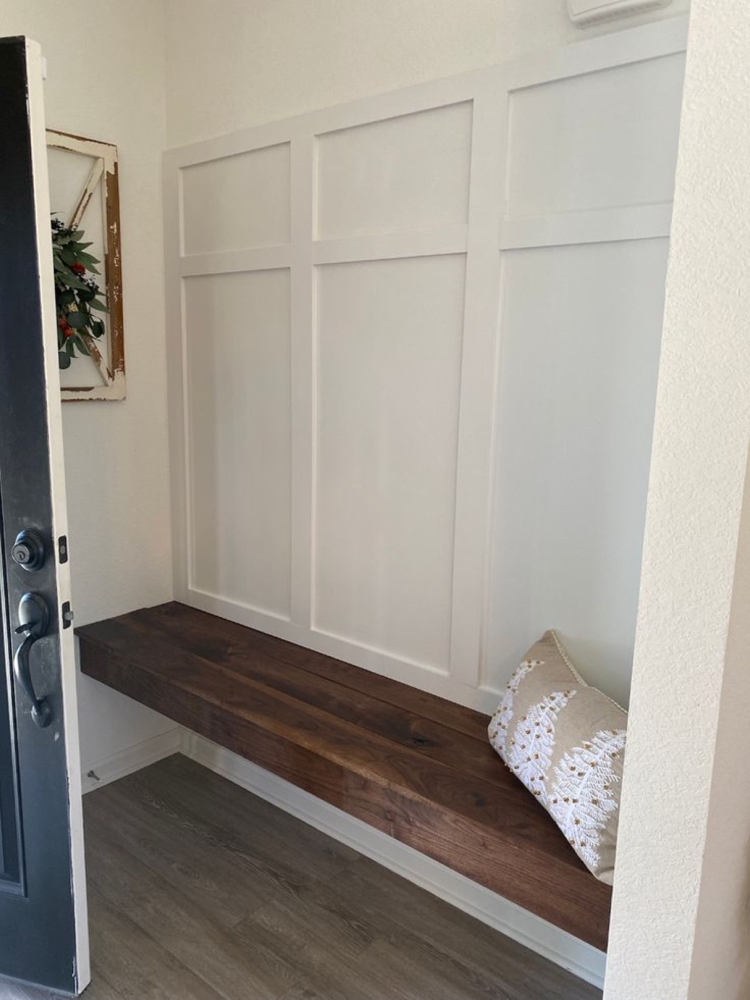
14. A Shelf Over the Hooks Catches the Hats
Hooks hold coats. Hats, gloves and the dog lead need a flat surface.
Here a white shelf with cubbies sits over a four-hook rail, holding three baskets, with a straw hat on one hook and a simple bench below.
Set the shelf 18 inches above the hooks, deep enough for a 12-inch basket. Shallower and the baskets stick out past the coats.
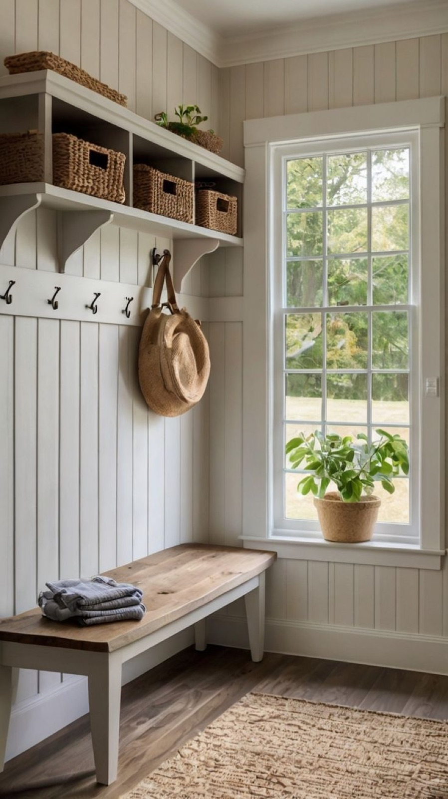
Vintage Double Prong Coat Hooks, 6-Pack
Shop on Amazon15. A Thick Shelf Reads as Carpentry
A 3/4-inch shelf looks like a plank. A 2-inch shelf looks like someone built it.
The oak shelf here is thick enough to carry two baskets and a stack of books, on blue beadboard over a long oak bench with striped pillows and three baskets below.
Glue two 1-inch boards face to face and plane the edge. It costs half of a solid 2-inch slab and nobody can tell.
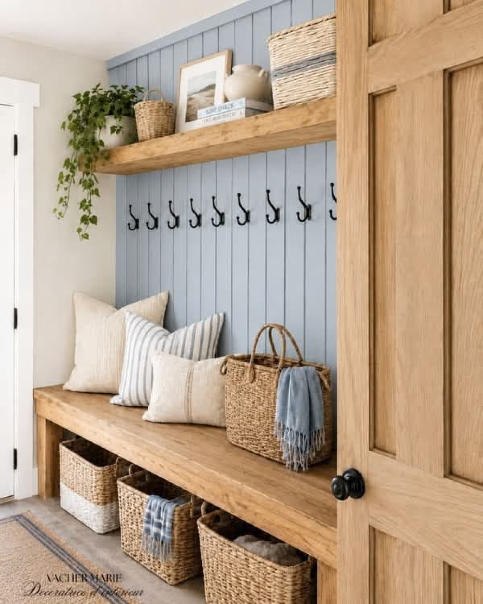
16. Heavy Baskets Low, Light Ones High
Shelves above head height should hold the things you never lift.
On this dark walnut unit the two baskets up top hold off-season gloves, while the three baskets at bench level hold the shoes that come and go every day.
Anything over seven feet gets a basket with handles. Anything you grab daily sits between your knee and your shoulder.
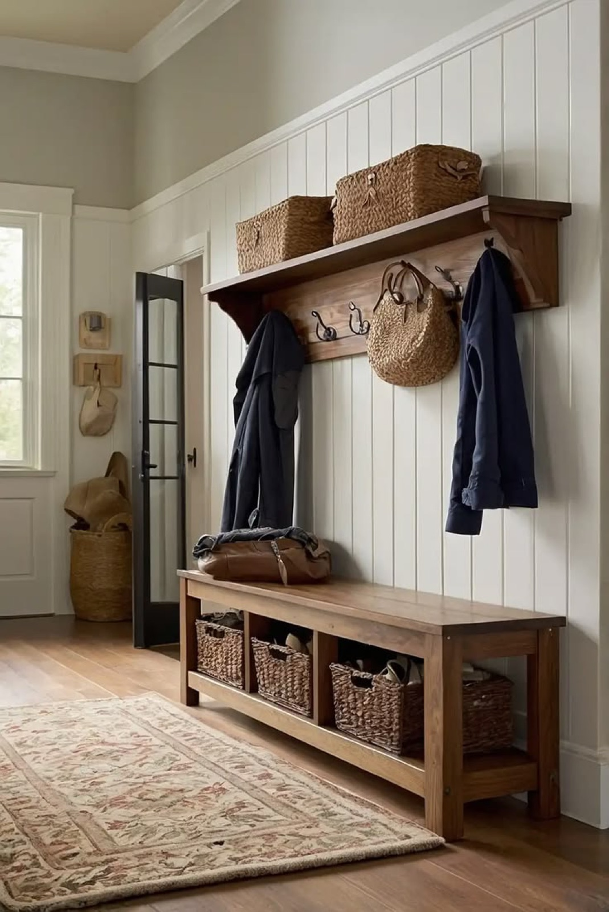
Nesting Water Hyacinth Baskets, Set of 3
Shop on Amazon17. A Narrow Hall Needs Storage on One Side Only
Storage on both walls of a 40-inch hall leaves 16 inches to walk through. This one puts the bench, the hooks and the shoe cubbies on the right and leaves the left wall bare but for a basket by the door.
Fifteen inches is the deepest a bench can be in a hall this width. Any more and two people cannot pass.
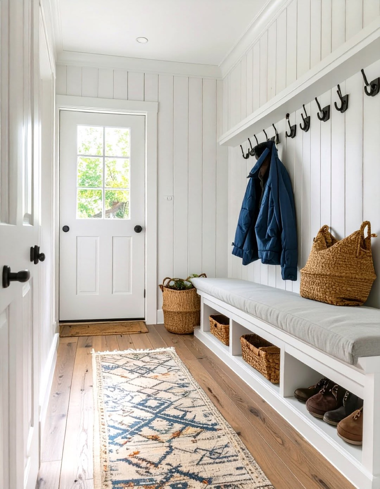
18. Dark Wood Up High Anchors a Light Room
A white mudroom with white storage floats. One dark element settles it.
Here a dark-stained cubby shelf with two baskets sits above a white bench with four plaid and leather pillows, and the room reads finished instead of bright.
Put the dark piece at eye level or above. Dark at the floor makes the room feel smaller.
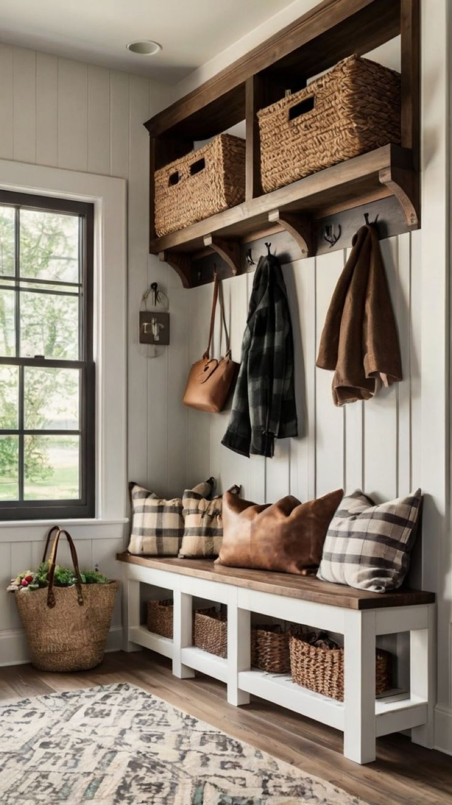
Woven Straw Tote with Leather Handles
Shop on AmazonBuilt-in lockers and cubbies
19. Design the Cubbies for the Shoes You Own
A beach house owns sandals. A ski house owns boots. The cubby should know the difference.
These coastal cubbies are shallow, eight wide and five tall, because every pair in them is a flip-flop or a sneaker, under four lockers with striped towels and a straw hat.
Measure your three bulkiest pairs and make the cubby an inch bigger than the biggest.
If one person owns riding boots, that person gets a tray, not a cubby.
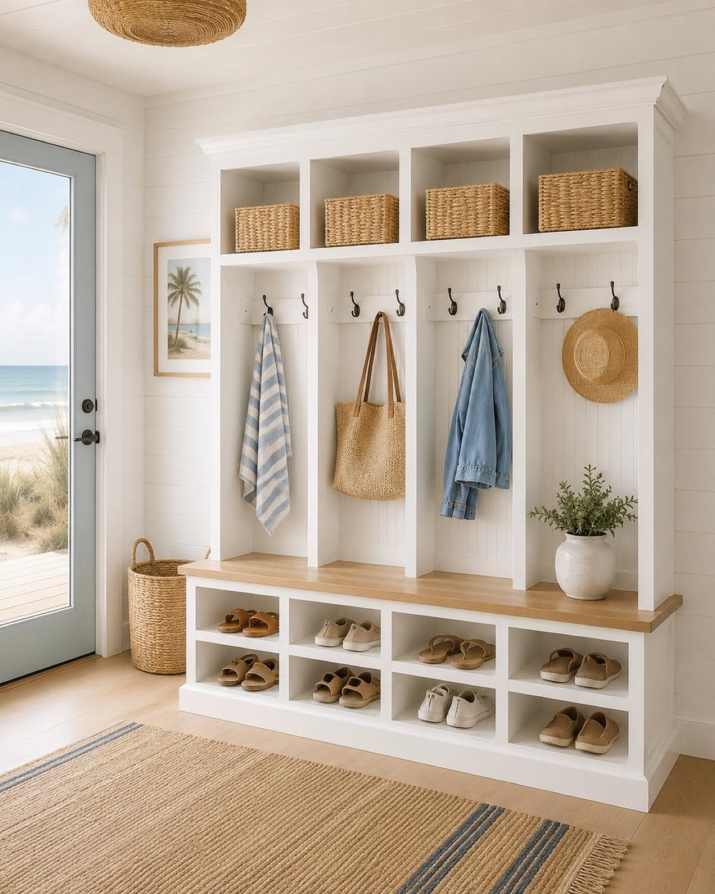
20. A Tall Cabinet Hides the Ugly Half
Not everything in a mudroom deserves to be seen. The vacuum, the dog food, the spare bags.
This white unit pairs a cushioned bench with four baskets beside a full-height cabinet with two doors, and the only things on show are a hat and a few pillows.
Give the cabinet a 24-inch depth and adjustable shelves. The vacuum goes on the floor of it, the rest goes above.
4-Cube Storage Organizer
Shop on AmazonWater Hyacinth Cube Baskets, Set of 3
Shop on Amazon21. Open Cubbies Above the Hooks Cut the Clutter
Closed cabinets above hooks hide things. Open cubbies make you tidy them.
Ten oak cubbies sit over a hook rail here, each holding one basket or one stack, on a blue-gray wall above a bench with blue cushions.
Twelve inches square, and buy baskets to fit before the paint dries.
An open cubby with a basket is storage. Without one it is a shelf of clutter.
Seagrass Storage Baskets with Handles, Set of 3
Shop on AmazonIndoor Bench Seat Cushion, 48 x 15 Inch
Shop on Amazon22. Decor Goes on the Top Shelf, Gear Goes on the Hooks
The top shelf of a hall tree is the only surface in the room that stays clean, which is why the HOME sign, the plant and the small frame live up there while the six hooks below hold the actual jacket and backpack.
Keep decor above 70 inches. Anything lower gets a coat thrown on it.
Hanging Wood Welcome Sign
Shop on AmazonWater Hyacinth Cube Baskets, Set of 3
Shop on Amazon23. Drawers Hide the Mess Faster Than Baskets
A basket takes two hands and a lean. A drawer takes one push.
This sage unit has two deep drawers under the bench, a cabinet beside it and two open cubbies up top, with four hooks on beadboard between.
Use full-extension drawer slides rated for 100 pounds. Shoes are heavier than people think.
Black T-Bar Cabinet Pulls, 10-Pack
Shop on AmazonFaux Pothos Hanging Vines, 2-Pack
Shop on Amazon24. Labeled Hooks End the Argument
Whose coat is on whose hook is a daily fight in a house with kids. Three chalkboard tags, one per hook, on gray beadboard over a bench with patterned tile, settle it.
Hang the tag from the hook, not the wall, so it goes wherever the hook moves.
Hanging Chalkboard Basket Tags, 15-Pack
Shop on AmazonWicker Storage Baskets with Liners, 3-Pack
Shop on Amazon25. Shoe Shelves at Shoe Height
Shoes stored at the top of a locker fall on your head. Shoes stored at the bottom get kicked.
These gray lockers put a shoe shelf at knee height and another at bench height, with the backpack hook between and the baskets up top.
Two shelves, 14 and 30 inches off the floor, hold everything a person wears in a week.
3-Tier Bamboo Shoe Rack
Shop on AmazonWoven Storage Baskets with Handles, Set of 3
Shop on Amazon26. Pair the Bench Cushion With the Doormat
Three patterns in one mudroom looks busy. Two, repeated, looks planned. The striped cushion on this bench picks up the gray tile, and the coir mat with its black border picks up the black hooks.
Buy the cushion and the mat on the same day. Matching later never works.
Non-Slip Coir Doormat, 17x30
Shop on AmazonMetal Umbrella Stand
Shop on Amazon27. Dark Bench, Light Wall, On Purpose
A dark bench top against white beadboard is the easiest contrast in the room.
This walnut-stained bench sits under white vertical paneling with five brass hooks and three baskets above, with a hat, a tote and a plaid shirt on the hooks.
Stain the bench top only. A dark bench frame makes the room feel heavy from the floor up.
Nesting Water Hyacinth Baskets, Set of 3
Shop on AmazonVintage Double Prong Coat Hooks, 6-Pack
Shop on Amazon28. Give the Umbrella a Home or It Lives on the Floor
An umbrella has nowhere to go. It drips, it leans, it falls over. Plan for it.
A tall ceramic stand by the door holds one umbrella here, beside a small drawer cabinet and three taupe lockers with a cushioned bench.
Put a drip tray in the bottom of the stand. A ceramic stand without one leaves a ring on the floor by Christmas.
Umbrella Stand with Drip Tray
Shop on AmazonNon-Slip Bench Cushion, 48 x 20 Inch
Shop on Amazon29. Tall Cabinets Hold the Off-Season
Winter coats in July do not belong on a hook. They belong behind a door.
This cream built-in flanks the open hook bay with four tall cabinet doors, with drawers under the bench and four baskets in cubbies above.
At least one cabinet should be 20 inches wide and full height. That is one adult coat on a hanger with boots below it.
Put the cabinet nearest the door. It is also where guests' coats go.
Black T-Bar Cabinet Pulls, 10-Pack
Shop on AmazonHeavy-Duty Rubber Boot Tray
Shop on Amazon30. Match Every Basket and the Room Goes Quiet
Ten different baskets look like ten different trips to the shop. Ten matching ones look like a plan.
The woven baskets here all come from one set, four up top and none below, on a sage beadboard wall with black hooks and a pale oak bench.
Buy one more basket than you need. The set goes out of stock the week you want another.

Water Hyacinth Cube Baskets, Set of 3
Shop on AmazonBlack Double Coat Hooks, 6-Pack
Shop on AmazonVintage lockers and barn doors
31. Numbered Lockers Settle Who Owns What
A number on the door is a name without the argument about fonts. Four blue metal lockers here carry brass numbers one to four, with a bench in front and a wood hook rail on the shiplap beside them.
Give each person their birthday month. It never changes and nobody fights over it.
Metal Umbrella Stand
Shop on AmazonNatural Jute Runner Rug, 2x6
Shop on Amazon32. Vented Doors Let Wet Gear Dry
A sealed locker turns a wet coat into a smell. A vented one dries it by morning.
These three pale green lockers have louvers top and bottom, on white shiplap with a hat hook beside them and a bench in front.
Secondhand school lockers almost always have vents. New ones often do not. Check before you buy.
Wall Hook Rail with 6 Double Hooks
Shop on AmazonExtra-Large Rubber Boot Tray, 48 Inch
Shop on Amazon33. Seal the Concrete in a Garage Mudroom
A garage floor absorbs everything that drips on it. Seal it before the bench goes in.
This blue-gray locker bank sits on bare concrete under the garage door opener, with four cubbies, four baskets up top and a striped rug in front.
Two coats of water-based concrete sealer, then a rubber tray under every boot.
The rug is not decoration. It lifts the chill off the floor.
Heavy-Duty Rubber Boot Tray
Shop on AmazonWashable Runner Rug, 2x8
Shop on Amazon34. Light Backing Makes Dark Lockers Read
A dark locker with a dark back is a black hole. These weathered wood lockers put white shiplap behind each bay, so the backpack and the baskets show instead of vanishing.
Paint the inside back of any dark locker white. One quart, and the light doubles.
Hanging Wood Welcome Sign
Shop on Amazon30 x 40 Rustic Wood Framed Mirror
Shop on Amazon35. Barn Doors Hide the Mess in Two Seconds
The fastest tidy-up is a door that slides across the whole wall.
Two white barn doors on a black track cover this cubby and bench unit, with wire baskets above and below and a plaid rug in front.
Mount the track into every stud with lag bolts. The door weighs 80 pounds and it swings.
A plastic anchor on a barn door track is not a shortcut. It is a trip to the hospital.
6 ft Sliding Barn Door Hardware Kit
Shop on Amazon6 ft Black Barn Door Track Kit
Shop on Amazon36. Brass Knobs Make Metal Lockers Look Like Furniture
Lockers come with a latch that says gym. Swap it for a knob that says home.
These sage green lockers carry small round brass knobs instead of latches, with ivy trailing across the top and a wood hook rail beside the door.
Drill out the latch, fit a 1-inch knob with a backing nut, and touch up the paint. Half an hour a door.
Brushed Brass Cabinet Knobs, 10-Pack
Shop on AmazonFaux Pothos Hanging Vines, 2-Pack
Shop on Amazon37. Butcher Block Is Tough Enough for Boots
A painted bench top chips the first time a boot heel hits it. Butcher block does not.
The oak bench here runs the width of the white lockers, under four open cubbies and a WELCOME HOME sign, on a brick floor.
Finish it with hardwax oil, not polyurethane.
When it scratches, you sand the spot and re-oil it. No stripping, no sanding the whole top.
6 ft Birch Butcher Block Countertop
Shop on AmazonLarge Handmade Straw Tote Bag
Shop on Amazon38. Label the Room, Not Just the Baskets
A sign that says MUDROOM is a joke and a reminder in one, and this vintage enamel one hangs above green metal lockers with a fern on top and a bench with two baskets below.
Hang any sign at eye level from the door, not from the room. It is the first thing a guest sees.
Rustic Wooden Welcome Sign
Shop on AmazonWoven Storage Baskets with Handles, Set of 3
Shop on AmazonColour, paneling and wall treatments
39. Brackets and Butcher Block Warm a White Wall
A plain white wall gets its warmth from two pieces of wood and nothing else.
Here a butcher block shelf on white brackets runs over eleven hooks, with a matching bench below holding three cubbies of shoes and a basket.
Buy brackets rated for the shelf plus 40 pounds. A loaded basket of boots is heavier than it looks.
Paintable Board and Batten Panels
Shop on AmazonNon-Slip Bench Cushion, 48 x 20 Inch
Shop on Amazon40. Do Something With the Ceiling
Everyone looks at the mudroom ceiling while they put their boots on. Give them something to see.
This one is reclaimed wood planks in gray and tan over a blue beadboard wall, with four drawer cubbies under the bench and a glass pendant in the middle.
Planks, beadboard, or just a colour two shades darker than the walls.
Use a semi-flush light. A pendant in a mudroom is at head height for anyone over six feet.
Brass Semi-Flush Mount Ceiling Light
Shop on AmazonBlack T-Bar Cabinet Pulls, 10-Pack
Shop on Amazon41. Patterned Tile Makes a Small Entry Look Planned
A plain floor in a small room is a plain room. A patterned one is a decision.
Blue and white star tile covers this floor under a pale oak bench with one basket, with blue beadboard and five black hooks above.
Porcelain, not cement tile, for a mudroom. Cement tile stains with the first salted boot.
Paintable Board and Batten Panels
Shop on AmazonNesting Water Hyacinth Baskets, Set of 3
Shop on Amazon42. Olive Green Hides Dirt Better Than White
White beadboard shows every boot scuff. The olive paneling here, behind a walnut bench with two open cubbies, four black hooks and two cabinets, shows almost none.
Satin finish. Flat olive holds the dirt it is supposed to hide.
Vintage Double Prong Coat Hooks, 6-Pack
Shop on Amazon6 ft Birch Butcher Block Countertop
Shop on Amazon43. A Dark Closet Becomes a Mudroom With the Door Off
Take the door off a hall closet and you have a mudroom with three walls already built.
This one is charcoal top to bottom, with two oak shelves, five brass hooks, a lamp, a framed print and an oak bench with shoe shelves.
Dark paint works in a nook because the room around it is white. The nook reads as a frame, not a cave.
Put a lamp on the shelf. A dark nook needs its own light.
36-Inch Walnut Floating Shelves, Set of 2
Shop on AmazonBlack Semi-Flush Mount Ceiling Light
Shop on Amazon44. Navy Shiplap Makes White Cabinets Pop
White cabinets on a white wall disappear. On navy they look built in.
Horizontal navy shiplap wraps this room behind white upper cabinets, a white bench with three labelled baskets and six brass hooks.
Paint the shiplap before the cabinets go in. Cutting in around a cabinet on dark paint shows every brush line.
Hanging Chalkboard Basket Tags, 15-Pack
Shop on AmazonNatural Coir Welcome Doormat
Shop on Amazon45. Herringbone Wood Adds Warmth Without Paint
If you do not want colour, add pattern.
The wall behind this bench is white oak laid in a herringbone, with five black hooks, two gray pillows, four baskets below and a hex tile floor.
Lay the herringbone on a plywood backer, nailed through the boards, then mount the hooks through the oak into the plywood.
Black Double Coat Hooks, 6-Pack
Shop on AmazonBlack T-Bar Cabinet Pulls, 10-Pack
Shop on Amazon46. Taupe Walls Hide Everyday Marks
Taupe is the colour that makes a mudroom look clean on a Tuesday. This room runs it on beadboard behind a gray cushioned bench, four baskets, a hook shelf and tall cabinets on both sides.
Pick a taupe with a gray base, not a pink one. Pink taupe turns peach next to oak.
Industrial Semi-Flush Mount Light
Shop on AmazonNeutral Linen Pillow Covers, 18x18, 4-Pack
Shop on AmazonMudrooms for kids, pets and busy families
47. Frame the Art Above the Hooks
Kids' art on the fridge gets lost. Framed above their hooks, it stays.
Eleven frames of children's paintings line this board-and-batten wall and the shelf above it, over ten hooks and a bench with shoe cubbies.
Use frames with a front-opening flap so the art changes in a minute.
Hang them above hook height. A wet coat never reaches them there.
Black 8x10 Wood Picture Frames, 6-Pack
Shop on AmazonWall Hook Rail with 6 Double Hooks
Shop on Amazon48. Give the Dog the Bench, Too
The dog is going to lie on the bench, so choose a bench the dog can lie on. A curly brown one takes up most of this wood seat, under white board-and-batten with a hat and a green jacket on the hooks.
A wood top wipes. A cushion does not. If there is a dog, use a washable throw instead.
Nesting Water Hyacinth Baskets, Set of 3
Shop on AmazonHeavy-Duty Rubber Boot Tray
Shop on Amazon49. A Freestanding Unit Is the One You Can Build
A built-in needs a carpenter. A freestanding hall tree needs a weekend and a drill.
This white unit in a garage has a walnut bench top and shelf, two drawers, four cubbies and two cabinets, built as one piece and pushed against the wall.
Anchor it to the wall at the top with two L-brackets.
A freestanding unit and a climbing child is a tip-over. The brackets are not optional.
Black T-Bar Cabinet Pulls, 10-Pack
Shop on AmazonBlack Metal Umbrella Stand
Shop on Amazon50. Kid-Height Hooks Cure the Backpack Pile
A hook at 60 inches is a hook a six-year-old will never use. The backpack goes on the floor under it.
The lower hooks here sit around 40 inches, holding a red backpack and two bright jackets, with a dark bench and children's boots in the cubbies below.
Two rows. Forty inches for kids, 65 for adults.
Move the low row up as they grow, or leave it and add a third. The hooks are the cheap part.
Black Double Coat Hooks, 6-Pack
Shop on AmazonWicker Storage Baskets with Liners, 3-Pack
Shop on Amazon51. Pegboard Is the Cheap Way to Change Your Mind
Hooks in drywall stay where you put them. Pegboard hooks move whenever the family changes.
A gray pegboard panel holds four hooks, four wire baskets of shoes and a wood shelf on top here, over a bench with three cubbies.
Mount it on 3/4-inch furring strips so the hooks have room behind.
Metal pegboard, not hardboard. Hardboard sags with a winter coat on it.
Metal Pegboard Wall Organizer, 48 x 36 Inch
Shop on AmazonPegboard Wire Basket, Small
Shop on Amazon52. Hang the Leash Where You Trip Over It
If the leash lives in a drawer, the walk starts with a search. Two leashes and a harness hang on the hooks by this door, with a basket of toys on the shelf above and the dog asleep on the mat.
One hook by the door at adult height, and nothing else goes on it.
Wall-Mount Dog Leash Holder with Shelf
Shop on AmazonWater Hyacinth Cube Baskets, Set of 3
Shop on Amazon53. A Cork Board Turns Hooks Into a Command Centre
The mudroom is where the permission slip gets handed over. Put the pin board there.
A framed cork board hangs in the middle of this hook rail, with a plaid shirt and a bag on the end hooks and a bench with cubbies and baskets below.
Keep the board between the hooks, not above them, so it stays at eye level and a coat never covers it.
Wood Framed Cork Board, 24 x 36 Inch
Shop on AmazonWall Key and Mail Organizer with Chalkboard
Shop on AmazonTight spaces and smart conversions
54. Go Vertical When the Floor Is Small
A tall narrow shoe rack holds more than a wide short one in half the floor. This ten-tier rack stands in the corner of a small entry with 20 pairs on it, beside a bench and a hook rail.
Ten inches deep fits every shoe but a boot. Boots go beside it on the floor in a tray.
Tall Narrow 10-Tier Shoe Rack
Shop on Amazon10-Tier Skinny Shoe Rack
Shop on Amazon55. Shoe Cubbies Along the Bench Beat a Separate Rack
A rack takes floor. Cubbies built into the bench take none.
This brown slatted unit runs eight shoe cubbies under a long bench, with a striped pillow, five hooks and a cubby shelf above.
Nine inches tall is a sneaker. Twelve is a boot.
Make two of the eight twelve inches, at the ends, and the boots stop living on the floor.
3-Tier Bamboo Shoe Rack
Shop on AmazonWoven Storage Baskets with Handles, Set of 3
Shop on Amazon56. Slide a Metal Rack Into the Bench
If the bench is already built, a wire shoe rack slides into the gap and doubles the pairs. Three two-tier racks sit inside this white bench, holding 18 pairs where six sat before.
Measure the gap first. Racks come in 10, 12 and 14-inch heights and almost nobody checks.
3-Tier Bamboo Shoe Rack
Shop on AmazonIndoor Bench Seat Cushion, 48 x 15 Inch
Shop on Amazon57. Turn a Closet Into a Mudroom With a Door That Slides
A hinged door needs three feet of swing. A barn door needs none.
A blue-gray barn door slides across this closet nook, revealing shiplap, four hooks, a shelf with two baskets and a cushioned bench with shoes below.
A low-clearance track fits above a door with six inches to the ceiling.
Measure that gap before you buy. Standard track needs eight.
Low-Clearance Barn Door Track Kit with Handles
Shop on AmazonNon-Slip Bench Cushion, 48 x 20 Inch
Shop on Amazon58. End the Room With a Glass Door
A mudroom with a solid door at the end is a corridor. A glass one is a room. This sage mudroom runs a bench, a counter and open shelves down one side to a half-glass oak door over a herringbone floor.
If the door is not glass, a window beside it does the same work. Light at the end is what makes people stop and sit.
Jute and Cotton Runner Rug, 2x6
Shop on AmazonArtificial Ivy Garland, 3-Pack
Shop on AmazonCommon Mistakes (and Fixes)
- Hooks screwed into drywall. Find the stud, or use a 50-pound toggle anchor. A coat and a bag is 15 pounds and it swings.
- A bench that is too tall. 18 inches, measured from the floor to the top of the cushion. 20 is a counter stool.
- Baskets that do not fit the cubby. Measure the cubby, subtract an inch, and buy to that. A basket that sticks out gets kicked.
- Flat paint on the walls. Satin or semi-gloss, every time. The first wipe-down tells you why.
- No tray under the boots. A rubber boot tray is the cheapest thing on this list and saves the floor.
Where to Start
Fifty-eight mudrooms is a lot, and you need one.
Start with the wall: a rail of hooks at the right height, into studs, six inches apart.
Add a bench at 18 inches with something under it, a tray for the boots, and a basket for whatever is left.
Everything else here is a version of that, and the version you pick depends on who comes through the door.